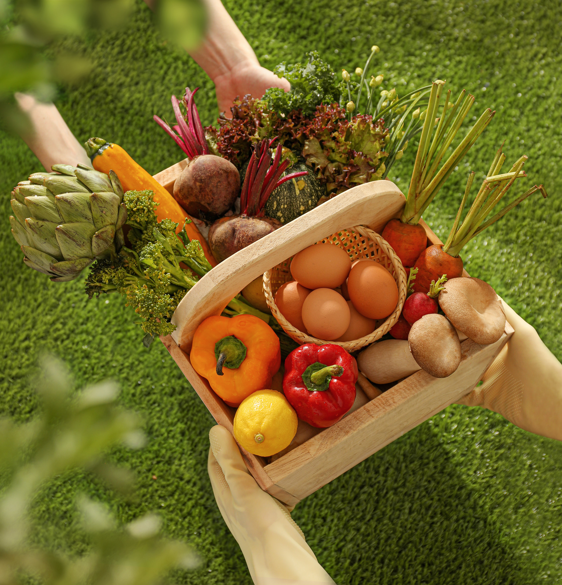
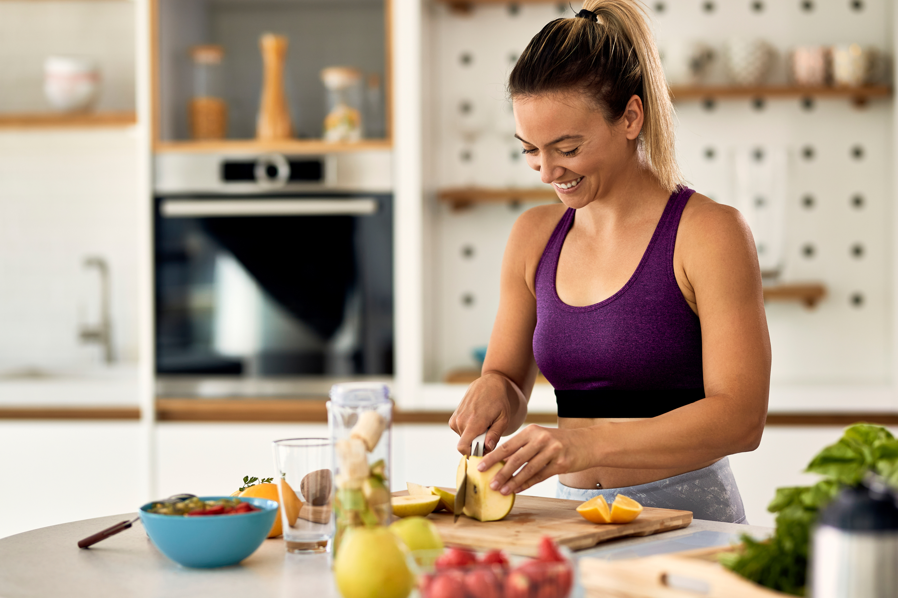

Our expertly curated vegetable baskets are made with the freshest, highest quality produce. Fresh Harvest Box has got you covered. Fresh, high-quality vegetables delivered to you.


Our baskets are assembled with care and delivered straight to your doorstep, so you can enjoy the taste of fresh fruit without ever leaving your home.
Just choose the vegetable you want to order by clicking on the checkboxes next to it.
Click on the basket and fill out the form.
Sit back and relax! Your fresh vegetables basket will be delivered.